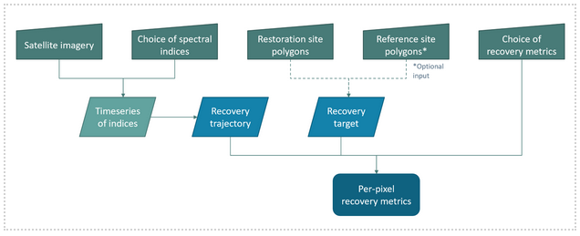

3. THE SPECTRAL RECOVERY TOOL
3.1 TOOL OVERVIEW AND PURPOSE
The objective of the PEOPLE-ER Spectral Recovery tool is to provide an open-source and satellite earth observation (EO) time series data analytics solution for ecosystem restoration research and monitoring purposes, which operates with freely available Sentinel-2 or Landsat satellite imagery. The aim is to provide custom analyses ideal for widespread applications beyond site-specific contexts, with flexible reference conditions enabling direct integration with current ecosystem restoration initiatives and guidelines. The tool provides flexible methods for satellite EO data time series analysis, by providing users with the ability to select from a variety of spectral indices and recovery metrics as well as define reference or baseline conditions. The ability to calculate multiple per-pixel indices allows spectrally derived products useful for further analysis to be produced by users that do not necessarily have a background in remote sensing. In providing a singular solution, spectral time series analysis becomes more approachable, increasing the opportunity to apply remote sensing techniques to ecosystem restoration monitoring.
3.2 TOOL WORKFLOW
The tool operates using the following approach:
-
The tool utilizes annual composites of satellite images, over the focus sites, from either Landsat or Sentinel-2 image data. Spectral indices are calculated for each pixel within each restoration site, for each year of the time series. This results in each pixel having a set of spectral trajectories through time.
-
Based on these, the tool compares the spectral trajectories to a recovery target (defined from the period prior to disturbance or a reference location).
-
Recovery metrics for each pixel are calculated based on the recovery trajectory and the recovery target. This informs on how well each pixel is recovering after disturbances or during the restoration process.

Figure 2. Tool conceptual workflow diagram.
3.3 TOOL INPUTS
Necessary inputs for the tool include an annual time series, covering one or more restoration sites, a choice of which spectral indices the tool should use to assess recovery, and a selection of recovery metrics. An optional input to the tool is one or more reference sites. These inputs are explained below.
3.3.1 TIME SERIES DATA
Time series data must be:
-
Satellite-derived annual raster images (we recommend compositing) – The spectral index calculation currently supports Landsat imagery post 1984. It is recommended that the time series composite be derived using Landsat Collection 2, Level 2, Tier 1 data, as this data is pre-processed prior with necessary corrections and represents the highest quality data available. See (https://www.usgs.gov/landsat-missions/landsat-collection-2 or Crawford et al., 2023) for further information. Updates to the tool will include the incorporation of Sentinel-2 imagery.
-
Multi-spectral bands in the Visible, Near infrared and Short wave infrared – The spectral index calculations depend on reflectance bands in the visible (blue, green, red), near infrared (NIR), and shortwave infrared (SWIR 1 and 2).
- Annual – The tool requires one image per year, as the calculation of the recovery metrics depend on an annual timestep.
- Cloud-free – The time series composite should have been pre-processed to ensure that pixels containing clouds and snow have been removed. A commonly used algorithm is Fmask (see Zhu et al., 2015), however there are numerous cloud-masking algorithms available for different software (Zhu, 2017).
Recommendations:
-
A best available pixel (BAP) composite – A BAP combines the highest quality and/or most appropriate pixels (based on selection criteria such as target date) from available satellite imagery from a given year. For more information on BAP composites, see Hermosilla et al. (2016) or White et al. (2014).
-
A tool to create a BAP composite using Google Earth Engine called BAP-GEE exists here, accompanied by a research paper by Francini et al. (2023). BAP-GEE provides an easily accessible user interface to aid in a rapid BAP composite creation, providing yearly .tif image files for download.
3.3.2 RESTORATION SITES
The tool accepts one restoration site, as a vector file (see technical documentation for further information). Restoration site polygons delineate the areas that are intended to be assessed for recovery or health (i.e., areas of disturbance). Each restoration site polygon will have the spectral indices calculated, and recovery metrics will be returned.
In addition, if no reference sites are provided (see 2.8 below), the restoration site will determine the recovery target via the historical approach (see Section 1.4 of the Theoretical Basis). The default recovery target method in the tool uses the average value of the two years prior to the disturbance, however this default method can be customized to fit each application. Custom options include the ability to manually set the timeframe (when and how many years) before the disturbance that is used to calculate the average historic condition. This could be useful to parameterize if the disturbance was gradual instead of sudden and so no exact disturbance dates exist, or if it is known due to historical, traditional, or local knowledge when the forest was in a desirable state.
Recommendations:
-
Larger restoration site polygons (containing 1000s of pixels) will be expected to have within site variability in vegetation conditions and recovery rates. The tool allows for raster-based visualization of indicators, but the spectral recovery graphs are per-polygon and will show the average for the site. Since recovery is often variable even within a small area, it is recommended to consider the size of the polygons for the analysis. It may be beneficial to stratify a single large restoration polygon into multiple smaller polygons. This may be more effective for revealing distinct trends, reduce variability of the recovery metrics for polygons, and provide more information about spatial heterogeneity. This means that it is also easier to identify areas of the landscape that may be recovering faster or slower than average.
-
When stratifying a larger polygon into multiple polygons, consider using factors that are expected to influence recovery, e.g., disturbance severity, climate, and pre-disturbance land cover or conditions (Atkinson et al., 2022), it may be useful to stratify the polygons according to one or more of these factors.
-
If using the tool for restoration planning a large landscape-scale polygon may be recommended as it may provide information on areas to prioritize for restoration.
We are currently working on enabling the use of multiple polygons into the tool's functioning. We hope to have it published soon!
3.3.3 SPECTRAL INDICES
The tool requires a list of spectral indices that should be calculated. The tool relies on the spyndex library to calculate spectral indexes. In addition it is able to calculate the Tasseled Cap Greenness and Tasseled Cap Wetness indexes. Below you'll find a list of indexes we recomend trying out initially:
| Index | Name | Formula | Ecological significance and information |
|---|---|---|---|
| NDVI | Normalized Difference Vegetation Index | \((NIR – Red) \over( NIR + Red)\) | Most commonly used index in recovery, typically associated with photosynthesis, growing condition, or "greenness" (Vogelmann et al., 2012; Zeng et al., 2022). Ranges from -1 to 1, with >0.6 indicating very good conditions (Mangewa et al., 2022). Sensitive to soil brightness and saturates at higher biomass levels (around 0.85 NDVI value) (Huete et al., 2002). |
| GNDVI | Green Normalized Difference Vegetation Index | \((NIR - Green) \over (NIR + Green)\) | Larger dynamic range than NDVI, meaning less sensitive to saturation at higher biomass levels and more sensitive to chlorophyll content (Gitelson et al., 1996). >0.5 indicates very good condition (Mangewa et al., 2022) |
| NBR | Normalized Burn Ratio | \((NIR - SWIR2) \over (NIR + SWIR2)\) | Increases with greater productive or more vegetative areas and decreases with water stress and dead vegetation, with greater positive values indicating greater productivity (Key and Benson, 2006). Sensitive to vegetation structure and higher levels of 'woody' vegetation (Pickell et al., 2016). |
| EVI | Enhanced Vegetation Index | \(2.5 * [(NIR - Red) \over (NIR + 6 * Red - 7.5 * Blue + 1)]\) | Alternative to NDVI to minimize atmospheric effects, less likely to saturate and more appropriate for densely vegetated areas (Huete et al., 2002; Zeng et al., 2022). More sensitive than NDVI for needleleaf canopy structures (Huete et al., 2002). Ranges from 0-1 with 1 indicating better vegetation conditions. |
| AVI | Advanced Vegetation Index | \([NIR * (1 – Red)*(NIR – Red)]^{1/3}\) | Found to be positively correlated with forest density and able to differentiate between forest types, shrubs, and grasses however may be most appropriate for deciduous forests (Roy et al., 1996). |
| SAVI | Soil-Adjusted Vegetation Index | \([(NIR - Red) / (NIR + Red + 0.5)] * 1.5\) | Alternative to NDVI to minimize the effect of soil background, so is more appropriate in sparsely vegetated areas (Huete, 1988; Zeng et al., 2022). |
| TCG | Tasseled Cap Greenness | \(0.2043 * Blue + 0.4158 * Green + 0.5524 * Red + 0.5741 * NIR + 0.3124 * SWIR1 + 0.2303 * SWIR2\) | Sensitive to subtle changes in vegetation condition and related to forest cover (Sonnenschein et al., 2011) and can be used to predict forest successional stages (Song et al., 2002). |
| TCW | Tasseled Cap Wetness | \(0.1509 * Blue + 0.1973 * Green + 0.3279 * Red + 0.3406 * NIR + 0.7112 * SWIR1 + 0.4572 * SWIR2\) | Found to be highly effective for recovery detection (Banskota et al., 2014; Cohen et al., 2010), and can be used to predict forest successional stages (Song et al., 2002). |
| SR | Simple Ratio Index | \(NIR \over Red\) | Related to vegetation structure, biomass, and chlorophyll content, but is sensitive to atmospheric effects (Tucker 1979; Zeng et al., 2022). |
| NDMI | Normalized Difference Moisture Index | \((NIR - SWIR1) \over (NIR + SWIR1)\) | Useful in areas frequently exposed to drought or experiencing changes in climate as it is sensitive to changes in vegetation moisture content; Ranges from -1 to 1 with lower values indicating water stress (Taloor et al., 2021; Zeng et al., 2022). Also related to vegetation structure and biomass (Latifovic & Pouliot, 2014). |
| GCI | Green Chlorophyll Index | \((NIR / Green) - 1\) | Found to be positively correlated with species abundance (Kumar et al., 2018), and provides an estimate of canopy chlorophyll content that has shown to be related to leaf area index as well as biomass (Gitelson et al., 2003). |
| NDII | Normalized Difference Infrared Index | \((SWIR1 - NIR) \over (SWIR1 + NIR)\) | Reveals hydrological condition of canopies, but may be less sensitive at lower moisture levels (Hardisky et al., 1983; Verbesselt et al., 2007; Yilmaz et al., 2008). |
3.3.4 RECOVERY METRICS
The tool calculates the selected recovery metrics as identified in an input list. Recovery metrics are calculated for each pixel in the restoration polygons, for each spectral index chosen.
The tool also provides per-polygon recovery metrics, which summarize the progress of the restoration site as a whole. This informs on how well the recovery is progressing generally and includes measures such as percent recovered. Percent of a restoration site recovered could be a valuable measure of success by itself, as restoration practitioners may simply require a certain percentage (e.g., 80%) of a restoration site to reach recovery target values to determine that no further management efforts are necessary.
| Variable | Description |
|---|---|
| Ds | Index value: Disturbance start |
| De | Index value: Disturbance end |
| Dpre | Index value: Pre-disturbance (average of 2 years prior to Ds) |
| Daverage | Index value: average value from Ds to De |
| R0 | Index value: Restoration start (usually 1 year after De) |
| Ri | Index value: years after R0, subscripts indicate the # of years |
| Rcurrent | Index value: current time step or last year of time series |
| Rtarget | Index value: recovery target |
| Rslope | Recovery slope/rate |
| P | Percent, user-defined, default is 80 |
| t | Years/time step |
| Metric | Formula | Description |
|---|---|---|
| ∆Indexregrowth | \(R_i−R_0\) Default: \(R_5−R_0\) |
The absolute change in a spectral index's value at a point in the restoration monitoring window from the start of the restoration monitoring window. The default is the change that has occurred 5 years into the restoration from the start of the restoration. |
| YrYr(Year on year average) | \(R_i - R_0 \over \Delta _t R_i - R_0\) Default: \(R_5 - R_0 \over 5\) |
The average annual recovery rate relative to a fixed time interval during the restoration monitoring window. The default is the first 5 years of the restoration window, however this can be changed by specifying the index value at a specific time step (Ri). |
| R80P (Ratio of 80 percent) | \(Rcurrent \over Rtarget * P\) OR \(max(R_5,R_4) \over Rtarget * P\) Default: \(Rcurrent \over Rtarget * 0.8\) |
The extent to which the trajectory has reached 80% of the recovery target value. The metric commonly uses the maximum value from the 4th or 5th year of restoration window to show the extent to which a pixel has reached 80% of the target value 5 years into the restoration window, however for monitoring purposes, this tool uses the current time step or last year of the time series to provide up to date recovery progress. 80% of the recovery target value is the default, however this can be changed by modifying the value of P. |
| Y2R (Years to recovery) | \(i where R_i= Rtarget*P\) Default: \(i where R_i= Rtarget*0.8\) |
The length of time taken (in time steps/years) for a given pixel to reach 80% of its recovery target value. The percent can be modified by changing the value of P. |
| RRI (Relative recovery index) | \(max(R_5,R_4)-R_0 \over D_s-D_e\) | A modified version of the commonly used RI, the RRI accounts for noise in trajectory by using the maximum from the 4th or 5th year in monitoring window. The metric relates recovery magnitude to disturbance magnitude, and is the change in index value in 4 or 5 years divided by the change due to disturbance. |
3.3.5 REFERENCE SITES
The tool accepts an optional input of one or more reference sites, as vector files (see technical documentation for further information). Reference site polygons delineate the areas that are intended to be used to determine the recovery target. In other words, these are areas of the landscape which are known to either be relatively healthy, stable, or have desired traits, which the restoration sites will be compared against. Each reference site polygon will have the spectral indices calculated, and the average value across the reference sites for each spectral index will be the recovery target value for that index. If no reference sites are provided, the recovery target is calculated via the default historical method (i.e., using average historical spectral values of the restoration site). The tool’s reference approach to determining a recovery target is similar to the historical approach in that it uses the values of spectral indices. However, instead of taking the average value of pre-disturbance conditions, the recovery target is determined by the average index value across the reference sites at the current timestep. This means that the recovery progress of the restoration site is compared to the current and contextual conditions within the landscape.
Recommendations:
- In areas that have seen large landscape disturbances, there may be a lack of appropriate reference systems. In that case, it is recommended to use areas that have either seen the least disturbance or degradation, or areas which have had the longest time to recover.
-
Often it is tempting to pick only the very highest quality reference sites, however these are often areas which are relatively undisturbed which may provide biased and/or unattainable targets (Atkinson et al. 2022). They could fail to experience the actual range of conditions seen in the restoration site or they could include entirely different target ecological communities (Atkinson et al. 2022). Try to select areas which have similar histories (e.g., land cover) as well as similar micro-climates.
-
Select multiple reference systems to provide a dynamic range of ecosystem attributes for the recovery targets.
3.4 TOOL CONSIDERATIONS AND LIMITATIONS
This section aims to outline some recommended key considerations and transparent discussion of the tool's limitations.
The use of satellite imagery may underestimate or overestimate recovery due to its spatial resolution relative to the spatial structure of vegetation recovery processes. Mangewa et al. (2022) found that habitat conditions were underestimated using Sentinel-2 10 m satellite imagery compared with approximately 8.5 cm resolution aerial-based imagery, also finding that while satellite imagery was able to detect the class of very good habitat conditions successfully, it was not as able to detect the poor or very poor condition classes. Generally, the result due to mixed pixels, is an overestimation of moderate condition vegetation (Mangewa et al., 2022). While using the tool, it is beneficial to keep in mind the resolution of the data and the implications for detail the imagery can reveal. Depending on the habitat, Sentinel-2 may offer advantages in revealing spatial heterogeneity of recovery that is not possible with Landsat.
Spectral indices have long been proven effective at estimating the conditions of vegetation (Huete et al., 2002; Key & Benson, 2006; Vogelmann et al., 2012; Zeng et al., 2022), however they provide an estimation of vegetation health using spectral indices as a proxy as opposed to a direct measurement of a recovery attribute such as vegetation height or stem density. Thus, the outputs of the tool should be validated using ground measurements, or external datasets such as those derived from LiDAR. For instance, rapid recovery of NDVI could indicate that native or natural vegetation is returning to an area after disturbance, but it could also mean that an invasive species has taken advantage of a lack of competition, which would then result in slower recovery rates and the disruption of successional stages (Burnett et al., 2019). However, a study by White et al. (2022) found that spectral recovery (of NBR) was successful in predicting recovery of structural attributes such as canopy cover and tree height, so it is still reasonable to assume relative accuracy in recovery estimation using multiple spectral indices.
Some spectral indices may not be appropriate due to geographical locations of the study sites or their ecosystems, or even due to the satellite images available. It is encouraged to research the use of each index for specific ecosystems and forest types to ensure compatibility and efficacy in results.
It is advisable to be critical in the interpretation of the results. Positive change in a spectral index does not necessarily equal recovery (as in the invasive species example mentioned above), and consistently high measures of the indices may not be desirable either. For example, if the aim of the restoration is to improve biodiversity and species richness, then it is perhaps more desirable for there to be variability in the spectral indices across the landscape. Variability in NDVI values, for instance, have shown to be correlated to habitat heterogeneity (Gould, 2000).
Generally, the individual goals of each restoration project vary, and so the interpretation of the results should subsequently vary. The tool allows for a better general understanding of landscape conditions, with different spectral indices providing differing information. The tool output could be used in a subsequent analysis, with different data such as soil, climate, species, or habitat information overlaid, to further identify recovery progress in light of environmental variables.